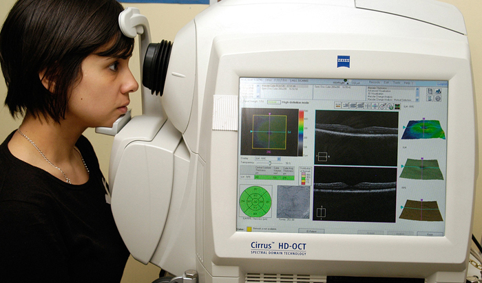
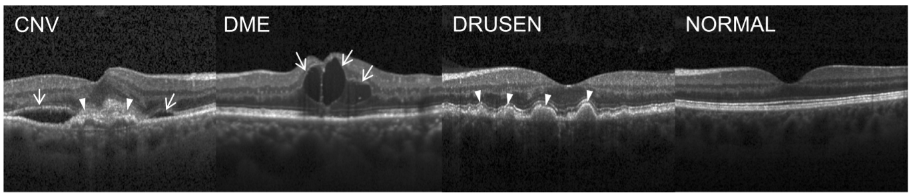

Introduction¶
Optical Coherence Tomography (OCT)¶
Spectral-Domain Optical Coherence Tomography (SD-OCT) is an optical imaging technique which provides retinal tissue information with high resolution imaging. OCT images allow for visualization of the structural properties of the individual retinal layers which is not possible through clinical examination by the human eye or other imaging methods. This makes OCT imaging a promising tool for guiding the diagnosis and treatment of some of the leading causes of blindness worldwide such as age-related macular degeneration (AMD) and diabetic macular edema. The purpose of the current project is to employ deep learning methods to detect pathological features associated with different eye diseases from OCT retinal structural data.
Problem Description¶
Deep learning techniques are often employed to detect these retinal diseases. This problem by nature is compute-intensive and GPU is often used for model training on a remote machine e.g. a university cluster. Testing the data and plotting the results on the other hand is usually done on the local machine as the GPU allocation is limited in time and it is not also easy to work on the plots for research papers as the cluster machine does not have many tools available. The back and forth between the local machine and the remote machine is done manually by downloading model files through a web interface and then running some code locally.
This can potentially lead tos data-dependency hell as it is extremely hard to track down what model was build based on what parameters and what plots came from which model.
Another potential problem is package dependency hell where different packages have different dependency requirements. Also, a package like Tensorflow has different versions for CPU and GPU so not having isolated environments may results in issues.
Advanced Python Solutions¶
Below concepts are used to develop this project based on the learnings from CSCI-E29 course:
Luigi
Microscience - isolated virtual environments
Salted Graphs
Atomic Write
Composition and Descriptors
Project Data¶
Data used for this project is available here: https://www.kaggle.com/paultimothymooney/kermany2018